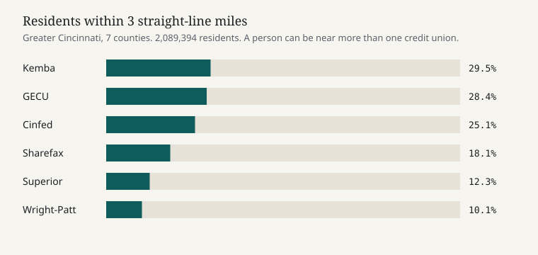
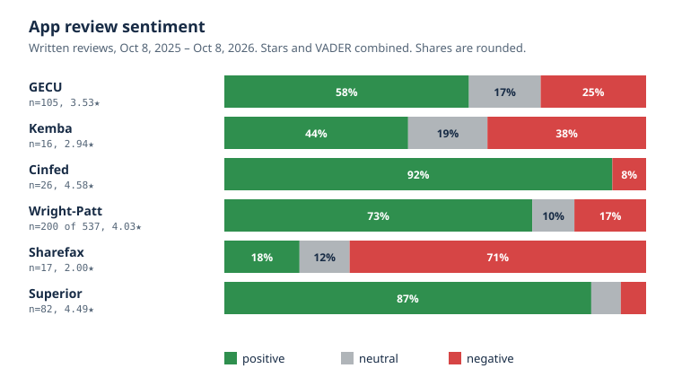

Key finding. About a third of the area's 2.09 million residents (34.9%) live more than 3 miles from any branch of the six credit unions studied. In app reviews, login and reliability was both the top praise and the top complaint at every one of them.
The problem
A branch count does not say who lives near a branch. A star rating does not say what the written reviews are about. A rate without a date is not comparable. I wanted one read of a local market that kept those limits next to the numbers.
GECU is my employer. The peers I actually scored are Cinfed, Kemba (West Chester, not the Columbus credit union of the same name), Sharefax, Superior, and Wright-Patt. Fifth Third and First Financial show up as banks in the deposit data. I did not pull their rates. The same market is in the AI search study, which is a different project.
How it works
The study area is seven counties: Hamilton, Butler, Warren, and Clermont in Ohio, and Boone, Kenton, and Campbell in Kentucky. That is 503 census tracts, 2,089,394 residents (ACS 2020–2024, five-year), and 120 ZIP Code Tabulation Areas with at least half their land inside those counties.
- RatesEach institution's own pages, fetched Oct 7
- JobsCareers boards, append-only log
- Call reportNCUA, second quarter 2026
- ReviewsApp Store RSS and Google Play
- BranchesLocation pages, checked against NCUA
Coverage uses straight-line distance from a tract's interior point to the nearest full-service branch, with a 3-mile threshold. I also computed 2 miles and 5 miles. "Gap" means none of these six credit unions, not an absence of banking. The FDIC Summary of Deposits for June 30, 2026 lists 542 bank branches in the seven counties. NCUA lists 111 credit-union sites there across all credit unions. Neither is counted as coverage.
Forty-six branches are in the coverage math: GECU 12, Kemba 11, Sharefax 9, Cinfed 7, Superior 4, Wright-Patt 3. Wright-Patt's locator is JavaScript-only, so its three local branches come from the NCUA file. Superior's count is the four inside the seven counties. The sentiment file notes that most of Superior's 25 branches are in northwest Ohio, so its app reviews cannot be split to Cincinnati.
I geocoded 50 sites in all, including ones I chose not to count. The Census geocoder matched 44. The other 6 were placed from the credit union's own coordinates, OpenStreetMap, or a third-party place point.
Reviews are written App Store and Google Play reviews from Oct 8, 2025 through Oct 8, 2026. A review is positive when a blend of stars and VADER is above 0.25, and negative when it is below −0.25. Wright-Patt had 537 reviews, so I drew a 200-review sample stratified by store (seed 42: 160 Google Play, 40 App Store). Yelp returned a 403. Google Maps review text needs a signed-in session. Branch reviews are not in this study.
Job posts were logged append-only from Oct 9 through Oct 28, 2026: 47 unique postings at five peer institutions, 190 rows, 33 flagged as tech or AI. Seven pulse snapshots of public pages were saved on Oct 9, 12, 14, 16, 23, 26, and 28.
Results
About a third of residents are more than 3 miles from all six. The gap is 728,861 people, 34.9%. At 2 miles the gap is 56.5%. At 5 miles it is 19.7%.
| Class, 3-mile | Residents | Share | Pop-weighted avg of tract median income |
|---|---|---|---|
| Both GECU and at least one of the five | 436,788 | 20.9% | $98.6k |
| GECU only | 157,280 | 7.5% | $96.4k |
| One of the five, not GECU | 766,465 | 36.7% | $78.6k |
| Neither (gap) | 728,861 | 34.9% | $96.6k |
That income column is an average of medians, weighted by population. It is not a true median.

| County | Within 3 mi of GECU | Within 3 mi of any of the five | Neither |
|---|---|---|---|
| Hamilton, OH | 32.5% | 81.8% | 14.4% |
| Butler, OH | 25.0% | 23.6% | 62.6% |
| Warren, OH | 28.8% | 51.9% | 46.1% |
| Clermont, OH | 24.2% | 55.8% | 39.0% |
| Boone, KY | 48.6% | 40.0% | 39.8% |
| Kenton, KY | 2.9% | 57.4% | 41.0% |
| Campbell, KY | 32.4% | 30.6% | 42.7% |
Coverage varies widely by county. Butler has the widest gap, at 62.6%, and Hamilton the narrowest, at 14.4%.
Written app reviews, same window, stars blended with VADER. Wright-Patt is the 200-review sample. Its uncapped 537 reviews are close: 3.95 stars, 70% positive, 19% negative.

| Credit union | Written reviews | Avg stars | Positive / neutral / negative |
|---|---|---|---|
| GECU | 105 (20 App Store / 85 Play) | 3.53 | 58% / 17% / 25% |
| Kemba | 16 (1 / 15) | 2.94 | 44% / 19% / 38% |
| Cinfed | 26 (9 / 17) | 4.58 | 92% / 0% / 8% |
| Wright-Patt | 200 of 537 (40 / 160) | 4.03 | 73% / 10% / 17% |
| Sharefax | 17 (6 / 11) | 2.00 | 18% / 12% / 71% |
| Superior | 82 (48 / 34) | 4.49 | 87% / 7% / 6% |
Across all six, no negative review in the window was coded to fees or rates. Login and app reliability was the top praise theme and the top complaint theme at every institution. All-time store ratings sit above the written-review average. GECU's store-wide ratings that day were 4.77 on iOS (7,588 ratings) and 4.35 on Play (2,173), against a written-review average of 3.53.
Two timing notes, both on small counts. Kemba launched a new platform around Sep 22, 2026. The five Google Play reviews after launch averaged 1.8 stars. The 12 reviews in the 12 months before launch averaged 3.25. Superior's 4.49 is not a steady year: 55 of the 82 reviews are dated Aug 12–13, 2026, and those days averaged 4.8 stars. Without those two days the remaining 27 reviews average 3.85 stars, and the split is 67% positive, 15% neutral, 19% negative.
Published rates, fetched Oct 7, 2026 from each institution's own pages. "As low as" or best tier. These are not offers, and several pages do not show a date.
| Institution | 12-month certificate | Auto, newest models | Date on the page |
|---|---|---|---|
| GECU | 3.70% APY, $0.01 min | 5.74% APR up to 48 mo / 5.90% up to 63 mo | Certificates 10/6/2026. Auto 7/28/2026. |
| Cinfed | 4.00% APY, $500 min | 5.740% APR up to 54 mo, autopay, 760+ | Effective date did not render. |
| Kemba | 3.75% APY, $500 min | 5.39% APR up to 63 mo, 750+ | Certificates 9/24/2026. Auto says 6/25/2025. |
| Sharefax | 3.70% base to 3.95% Platinum, $500 min | 5.99% up to 63 mo | Certificates 10/5/2026. Auto 7/31/2026. |
| Wright-Patt | 3.75% APY, 12 to 17 months, $500 min | 4.99% to 15.44% APR up to 63 mo | None shown. |
GECU's best checking yield on those pages was 0.45% APY. Cinfed's Summit checking was 6.00% APY on up to $10,000 when qualifications are met, and Kemba's Get Green was 4.00% APY on up to $15,000 with its own qualifications. GECU's HELOC headline was a 4.99% intro APR for 6 months.
NCUA call report, June 30, 2026, as compiled on Oct 7. Year-over-year is against June 30, 2025.
| Institution | Assets | Members | Net worth ratio |
|---|---|---|---|
| GECU | $4.213B (−1.9%) | 324,004 (+8.2%) | 8.52% |
| Cinfed | $863.2M (+7.6%) | 38,852 (+1.9%) | 11.56% |
| Kemba | $1.740B (+0.7%) | 130,948 (+1.6%) | 11.68% |
| Sharefax | $720.8M (+37.7%) | 41,170 (+27.3%) | 9.82% |
| Wright-Patt | $9.549B (+2.1%) | 527,080 (−0.1%) | 11.32% |
Sharefax's member and asset jumps are mostly its 2025 merger with Emery, not a like-for-like gain. On a combined basis, assets were about flat and members were down.
Fifth Third was number two in Cincinnati MSA deposits in a June 2026 CharterBench cut, at 24.34% with 93 branches. First Financial was number four, at 3.56% with 46 branches. I treated both as context. Fifth Third is a national-scale bank headquartered in Cincinnati, and First Financial's certificate page asked for a ZIP before it showed a rate, so I did not copy a third-party rate.
A decision I changed
I first put every site I could find on the map, including lobbies that are not full-service branches. I then took them out of the coverage math. GECU's Evendale plant office is restricted to plant employees. Cinfed has three interactive-teller sites that are not branches. Kemba had announced a South Lebanon move that was not open yet, so I kept the current site.
I checked the consequence. Counting Cinfed's three teller-only sites moves the gap from 34.9% to 34.7%. They stay off the branch count. They can still be drawn on a map.
Status
The watch ran from Oct 7 through Oct 28, 2026. The pulse snapshots stopped on Oct 28. It is not a live product, and it is not scheduled.
Open questions
- Distance is straight-line, not drive time. The Ohio River makes some 3-mile links longer in a car.
- Kemba (16), Sharefax (17), and Cinfed (26) are too small for a firm ranking. One review moves their percentages by several points.
- App reviews are people who had something to say about an app, not a member survey. Some reviewers may not be members.
- Cinfed's rate page had a blank effective date, Wright-Patt showed none, and Kemba's auto rate was dated June 25, 2025. Rate comparison is fragile until those dates exist.
- Greater Cincinnati Credit Union appears in a public roundup. I did not fetch it. First Financial's own certificate rate was not on the page without a ZIP.